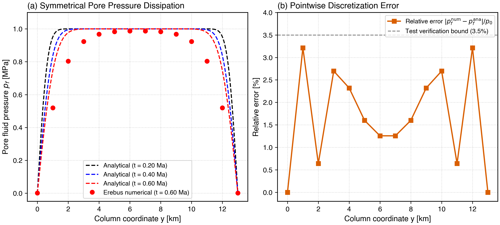
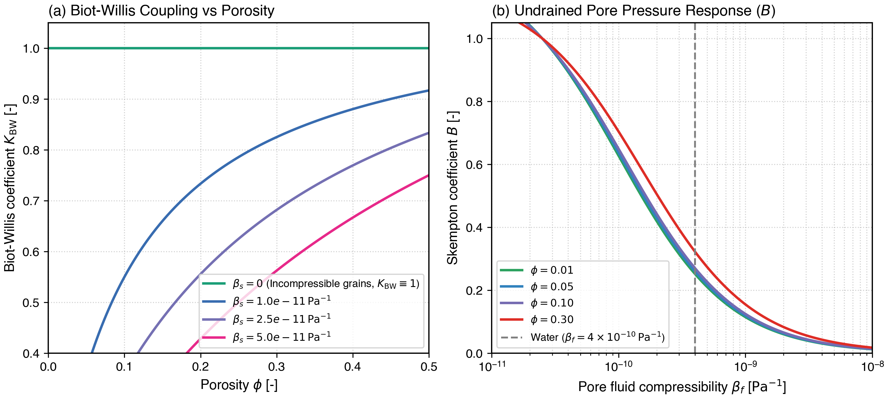

Verification and Validation
This page summarizes the benchmarks and tests used to ensure numerical accuracy and physical fidelity in Erebus.jl.
1. 1D Terzaghi Analytical Consolidation Benchmark
The primary verification test for the coupled Stokes-Darcy formulation is the one-dimensional Terzaghi consolidation problem.
- Setup: Saturated porous column of height $H$ with draining boundary anchors ($P_f = p_{\text{surface}} = 1000\text{ Pa}$) subjected to excess pore pressure dissipation.
- Analytical Solution: Fourier series representation of two-way pore pressure dissipation over dimensionless time factor $T_v = c_v t / H^2$.
- Result: The numerical pore pressure field computed by the monolithic solver matches the analytical Fourier series solution at all column depths with a relative error $< 3.5\%$. See the Terzaghi Consolidation Tutorial for the full derivation and code.

Figure 1: Benchmark verification of the coupled Stokes-Darcy solver against the analytical 1D Terzaghi consolidation solution. (a) Pore fluid pressure dissipation along column height $y \in [0, H]$ at three successive timesteps, comparing the analytical Fourier series (dashed curves) with Erebus numerical results (dots). (b) Pointwise relative error $|p_f^{\text{num}} - p_f^{\text{ana}}| / p_0$ showing that numerical discretization error remains strictly below $3.5\%$ throughout the column.
2. Poroelastic Constitutive Limits
The constitutive poroelastic functions in src/physics.jl are verified against physical asymptotic limits:
Incompressible Solid Skeleton ($\beta_s \to 0$): $\lim_{\beta_s \to 0} K_{\text{BW}} = 1, \quad \lim_{\beta_s \to 0} B = \frac{\beta_\phi}{\beta_\phi + \phi(1 - \phi)\beta_f}$ Verified over porosity values $\phi \in [\phi_{\text{min}}, \phi_{\text{max}}]$.
Incompressible Pore Fluid ($\beta_f \to 0$): As fluid compressibility approaches zero, Skempton coefficient $B$ approaches its undrained upper bound: $\lim_{\beta_f \to 0} B = \min\left(1, \frac{\beta_d - \beta_s}{\beta_d - (1 + \phi)\beta_s}\right) = 1$ where the code clamps the theoretical ratio to $[0, 1]$ to enforce the physical upper bound.
Porosity Bounding Guarantees: Constitutive routines clamp porosity to $[\phi_{\text{min}}, \phi_{\text{max}}]$ to prevent singular division when $\phi \to 0$ or $\phi \to 1$.

Figure 2: Theoretical behavior of derived poroelastic coefficients in Erebus. (a) Biot-Willis coefficient $K_{\text{BW}}$ as a function of porosity $\phi$ for varied solid grain compressibility $\beta_s$ to confirm asymptotic convergence toward unity ($K_{\text{BW}} \equiv 1$) in the incompressible solid grain limit. (b) Skempton pore pressure coefficient $B$ as a function of fluid compressibility $\beta_f$ for representative porosity values to display undrained response transitions.
3. Matrix Block Consistency Tests
The individual coupling sub-blocks in assemble_hydromechanical_lse! are tested independently against theoretical values:
- Solid continuity diagonal ($L[P_t, P_t]$): Matches $+K_{\text{cont}} \left(\frac{1}{(1-\phi)\eta_\phi} + \frac{\beta_d}{\Delta t}\right)$.
- Poroelastic cross-coupling ($L[P_t, P_f] = L[P_f, P_t]$): Matches $-K_{\text{cont}} \left(\frac{1}{(1-\phi)\eta_\phi} + \frac{\beta_d K_{\text{BW}}}{\Delta t}\right)$.
- Fluid continuity diagonal ($L[P_f, P_f]$): Matches $+K_{\text{cont}} \left(\frac{1}{(1-\phi)\eta_\phi} + \frac{\beta_d K_{\text{BW}}}{B \Delta t}\right)$.
4. Radiogenic Energy and Mass Conservation
- Radioactive Decay Kinetics: Exponential decay of $^{26}\text{Al}$ and $^{60}\text{Fe}$ is verified against analytical integration $\int_0^t Q(t') dt'$ to confirm exact conservation of energy release.
- Dehydration Mass Balance: Fluid released from decomposing hydrated silicates matches matrix mass loss ($DMP$).